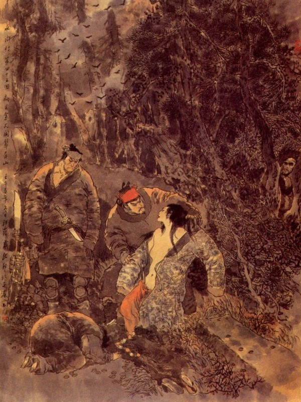
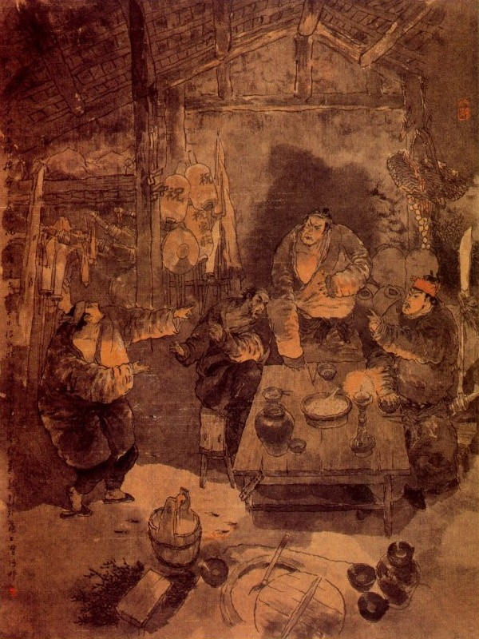

Khi đó mấy người ở phố xá túm lấy Vương Công cùng đem vào phủ quỳ xuống kêu với Tri Phủ rằng:
- Sáng ngày chúng tôi ra nghe tiếng kêu, vội chạy ra phố xem thì thấy lão này đánh đổ cháo lên trên hai cái xác chết, một cái xác hoà thượng, một cái xác đầu đà, toàn thị trần truồng hết cả và có con dao vất ở bên cạnh đầu đà, xin đến trinh quan biết.
Vương Công kêu rằng:
- Việc đó chúng tôi không biết đầu đuôi thế nào. Sáng ngày dậy sớm, đi với thằng bé gánh hàng đem ra chợ bán, bỗng tới đó bị vấp ngã, máu me dính bết ra người, bấy giờ mới biết có hai xác chết. Chúng tôi thấy thế lấy làm kinh sợ, kêu la ầm ĩ cho phố xá đổ ra rồi kéo đến để trình quan lớn. Xin ngài lượng cả xét cho.
Quan Phủ nghe nói, liền sai nha lại dẫn tụi Vương Công cùng người hàng phố đến đó để khám nghiệm sự tình.
Khi chúng khám xong, về bẩm với Tri Phủ rằng:
- Nhà sư bị giết đó là hoà thượng Bùi Như Hải ở chùa Báo ân, còn người đầu đà, tức tên là Hồ Đạo ở đằng sau chùa. Nhà sư ấy không mặc một thứ vải lụa nào, trong mình có đến ba bốn nhát dao đâm. Hồ Đạo thì có để một con dao hành hung lên cổ, chỉ có một nhát thương rất nặng. Việc này chắc là Hồ Đạo cầm dao đâm giết nhà sư rồi sợ tội vạ đến thân mà lại tự tử chết nốt.
Tri Phủ cho đòi chư tăng ở chùa đó đến để tra hỏi, đều không ai biết đầu đuôi ra sao cả.
Bấy giờ Khổng Mục bảo với Tri Phủ rằng:
- Cứ xét về hiện tình thế này, chắc là hai bên làm việc gì phi pháp rồi tranh nhau mà lôi thôi sinh sự, không hề gì động đến Vương Công, vậy tha cho Vương Công trở về với hàng phố, để sau này có việc chi sẽ đòi hỏi đến. Còn hai cái xác kia, giao cho chùa Báo Ân phải đem quan quách để chôn đi một nơi rồi lập án cho là hai bên giết hại lẫn nhau, thế là công chính.
Tri Phủ khen là phải liền y lời, truyền cho theo đó thi hành.
Được ít bữa có kẻ hiếu sự ở gần phố đó, đặt ra câu hát cho trẻ con hát rằng:
Nực cười hoà thượng chùa Báo An,
Cũng là túc trái tiền nhân,
Lứa đôi thiện nam dỗ tín nữ,
Mong cho vui sướng lấy thân,
Ngờ đâu Cực Lạc Quan Âm vừa tiếp dẫn,
Bỗng đâu Huyết bồn Địa ngục đã sa chân!
Than ơi! Chữ Không, Sắc quả nhân không nhớ,
Kiếp hoá sinh kia tớ theo thầy!
Ví chăng xum họp rồng mây,
Thì chi đến nỗi đường giây máu tình?
Tưởng rằng: Chỉ có bà Mục Liên dẫn mẹ đến trời xanh;
Nào ai hay, sư hổ mang lại hoá kiếp bởi cô mình mình ơi!
Lại có mấy anh hiếu sự nữa, nghe mấy câu hát ấy thì cũng tức tối trong lòng mà đặt luôn một khúc "Lâm Giang Tiên" cho trẻ hát:
"Sắc giới phá tan, Dao oan kề cổ, Tiên nhân hậu quả, Thực rõ từng ly.”
Sinh thì diện mục gớm ghê,
Áo quần trút sách dao kề một bên.
Sư cụ đêm nay tròn quả phúc,
Đêm qua sư bác vẫn như điên.
Đầu đà cũng quyết cùng nhau chết,
Cửa Phật khen ai khéo nặng nguyền. "
Đàn bà, trẻ con thấy hai câu hát ấy thì truyền tụng luôn mồm làm cho phố xá ai ai cũng biết. Chi chàng kia thấy vậy, trong bụng càng lấy làm cay đắng xót xa mà không dám hé miệng nói một câu gì vào đó.
Về phần Dương Hùng ở phủ Kế Châu khi đó, nghe thấy câu chuyện như thế thì đoán chắc là Thạch Tú làm ra, liền tự ăn năn hối hận trong lòng rồi quay ra vơ vẩn đi tìm Thạch Tú, để hỏi xem đoan đích ra sao?
Chàng vừa đi đến phía trước cầu, đã thấy có tiếng người đằng sau họi lên rằng:
- Ca Ca đi đâu đấy?
Dương Hùng nghe gọi quay lại thấy Thạch Tú liền nói.
- Kìa hiền đệ, tôi đương tính đi tìm hiền đệ đây.
Thạch Tú nói:
- Ca Ca hãy đến chỗ này, tôi nói chuyện đã.
Nói đoạn dẫn Dương Hùng vào một hàng cơm, đến một chỗ phòng con để nói chuyện với nhau.
Thạch Tú bảo Dương Hùng rằng:
- Ca Ca, tôi nói có sai đâu?
Dương Hùng nói:
- Thôi, xin hiền đệ tha lỗi cho tôi. Vì hôm đó tôi say rượu nói liền, bị đứa gian phụ dò biết ý tứ rồi nói xấu hiền đệ lắm câu không ra gì cả. Nay tôi tìm đến để xin lỗi với hiền đệ đây.
- Ca Ca ơi! Tôi dẫu là một đứa vô tài, song đầu đội trời, chân đạp đất, không khi nào làm càn bao giờ? Tôi chỉ sợ sau này lỡ Ca Ca lại trúng kế, nên đến tìm để bảo rõ cho Ca Ca biết, hiện có tang tích đây kia, tôi xin lấy Ca Ca xe.
Nói đoạn đem cả quần áo của hai người đã giết mà đưa cho Dương Hùng xem.
Dương Hùng xem xong bầng bầng nổi giận mà rằng:
- Để hôm nay về cắt đầu con dâm phụ kia thì mới hả lòng được.
Thạch Tú cười rằng:
- Anh lại thế rồi. Anh là một người làm việc quan, không biết pháp luật hay sao? Bây giờ không bắt được quả tang thì giết người ta thế nào được? Ngộ lỡ ra tôi nói xằng thì có phải giết oan người ta không?
- Thế thì có thôi được hay sao?
- Bây giờ anh phải nghe tôi, mới có thể làm một anh con trai ở đời được.
- Thế nào hiền đệ cứ nói tôi nghe?
- Gần núi cửa đông đây có toà núi Thúy Bình Sơn, rất là tĩnh mịch, đến mai Ca Ca nói dối là đi lễ rồi dắt tẩu tẩu và đứa thị nữ lên đó một thể. Đoạn rồi tôi đón ở đó, để ba mặt một lời đối chứng minh bạch rồi Ca Ca sẽ làm giấy cho người ta về, thế là công bằng hơn cả.
- Hiền đệ bất tất phải thế, tôi biết rằng hiền đệ là người thủy chung, không khi nào có thế mà ngại. Cái đó toàn là con khốn nạn nó nói liều nói lĩnh ra cả.
- Đành vậy, nhưng tôi muốn cho Ca Ca biết rõ đầu đuôi thì tôi mới hả.
- Hiền đệ đã định vậy thì rất là có lý, sáng mai tôi xin dẫn nó đến đó, hiền đệ chớ sai lời mới được.
Thạch Tú cười mà đáp rằng:
- Nếu ngày mai tôi không đến đó thì những lời nói của tôi là vất đi cả. Xin Ca Ca cứ y ước cho.
Nói đoạn Dương Hùng từ biệt Thạch Tú mà đi về trong phủ. Chiều hôm đó Dương Hùng về nhà vẫn cứ ung dung điềm đạm như mọi ngày, không có điều chi là ý khác. Sáng hôm sau chàng dậy sớm nói với vợ rằng:
- Đêm qua tôi nằm mê, thấy thần về báo mông, nói rằng: "Khi trước có hứa làm lễ mà sao đến nay không đi trả lễ. Nguyên trước tôi có hứa đến lễ Nhạc miếu ngoài cửa đông, song lâu nay bận rộn chưa sao trả lễ được, vậy ngày nay tôi muốn cùng nàng ra để trả lễ một thể".
Chị chàng kia đáp rằng:
- Tiết Cấp đi muốn mình có được không? Cần gì phải tôi đi nữa?
- Ngày trước tôi có hứa lễ, chính là ngày thành thân với nhau, vậy ngày nay phải cùng đi với nhau mới được.
- Nếu vậy ta cùng ăn cơm chay sớm rồi tắm rửa mà đi một thể.
- Để tôi mua vàng hương với thuê xe, nàng ở nhà tắm rửa trước rồi bảo thị nhí sắp sửa đợi tôi về là đi.
Nói đoạn đứng dậy đi ra hàng cơm tìm Thạch Tú hẹn rằng:
- Hôm nay cứ ăn cơm xong là tới đó cả.
Thạch Tú nói:
- Khi đến lưng chừng núi. Ca Ca nên cho đỗ kiệu xuống rồi mấy người đi bộ lên núi, tôi sẽ chờ một chỗ vắng vẻ trên đó, chớ cho người lạ đi vào mới được.
Dương Hùng nhận lời, quay ra đi mua vàng hương thuê kiệu rồi trở về ăn cơm. Khi ăn cơm xong sắp sửa rồi lên kiệu, kiệu phu đã chực ở ngoài cửa.
Dương Hùng trở vào nói với Phan Công rằng:
- Xin trượng nhân trông nom nhà giúp, chúng con đi lễ một lát sẽ về.
Phan Công nói rằng:
- Tiết Cấp đi lễ, nên mau mau trở về, kẻo lão mong đợi.
Nói đoạn chị chàng lên kiệu rồi Dương Hùng cùng thị nữ đi bộ theo sau. Khi ra đến ngoài cửa đông. Dương Hùng dặn lũ phu kiệu khiêng kiệu lên núi Thúy Bình Sơn rồi sẽ cho thêm tiền.
Nguyên Thúy Bình Sơn ở ngoài cửa đông Kế Châu, ước chừng hơn hai mươi dặm; trên đó toàn thị tha ma mộ địa, cỏ mọc xanh um, cành dương trắng xoá, không hề có chùa chiền nhà cửa ở trên.
Bấy giờ phu kiệu khiêng kiệu đến lưng chừng núi. Dương Hùng liền bảo hạ kiệu xuống rồi rút then mở bức rèm giục chị chàng đi ra.
Chị Chàng hỏi:
- Đây là chỗ nào?
Dương Hùng đáp:
- Hãy cứ xuống sẽ biết.
Nói đoạn quay ra dặn bọn phu kiệu rằng:
- Các ngươi đợi ở đây, một lát ta cho tiền uống rượu, bất tất phải lên trên ấy.
Đám kiệu phu vâng lời, đứng đợi ở đó, Dương Hùng dẫn chị chàng kia, cùng thị nữ đi lên trên núi. Khi tới chỗ vắng vẻ, thấy Thạch Tú đã đứng đợi ở đó, chị chàng kia liền hỏi Dương Hùng rằng:
- Sao đi lễ lại không mang vàng hương lên đây?
Dương Hùng nói:
- Tôi cho người đem lên trước rồi.
Nói đoạn, liền dẫn chị chàng kia đến một nơi cổ mộ rất là hoàng tịch. Tới đó Thạch Tú bỏ khăn gói dao gậy xuống chỗ gốc cây rồi chấp tay vái chị chàng kia mà rằng:
- Xin chào tẩu tẩu.
Chị chàng kia cũng vội vàng hỏi:
- Sao thúc thúc cũng ở đây? Nàng vừa hỏi vừa giật mình kinh sợ, không biết tại sao?
Thạch Tú đáp rằng:
- Tôi đợi tẩu tẩu ở đây đã lâu.
Đoạn rồi Dương Hùng quay lại hỏi chị chàng rằng:
- Bữa trước nàng nói với ta những chuyện thúc thúc làm xằng như thế nào? Hôm nay vắng vẻ nàng thuật lại rõ ràng cho ta nghe một lượt?
Chị chàng tái người đi mà đáp rằng:
- Việc đã qua rồi, còn nhắc lại làm chi nữa?
Thạch Tú trừng mắt hỏi:
- Tẩu tẩu nói thế nào?
- Thúc thúc việc gì đến đó, còn nói nữa làm chi?
Thạch Tú cười nhạt rồi giở khăn gói lấy quần áo của Bùi Như Hải và Hồ Đạo ra, ném xuống đất mà hỏi rằng:
- Có biết quần áo nào đây không?
Chị chàng kia trông thấy, lại đỏ bầng mặt lên không nói được câu gì nữa.
Thạch Tú cầm dao lưng ra tay, bảo với Dương Hùng rằng:
- Việc này chỉ hỏi con thị nữ sẽ biết.
Dương Hùng liền nắm đầu con thị nữ bắt quỳ xuống trước mặt quát lên hỏi rằng:
- Con khốn nạn này, những việc thông gian ở chùa. hẹn ước đốt hương như thế nào. cùng là đầu đà gõ mõ. thế nào, muốn sống nói thực cho ta nghe. Nếu sai một câu nào là ta cắt cổ băm nhừ ngay lập tức.
Thị nhi run rẩy kêu rằng:
- Bẩm ngài, việc không can thiệp gì đến tôi, ngài tha cho tôi xin kể ngài nghe.
Nói đoạn liền đem chuyện từ khi đến chùa lễ Phật vào phòng xem răng Phật, đuổi thị nữ xuống nhà dưới rồi đến ngày thứ ba có đầu đà đến xin kêu, sai lấy tiền đồng ra cho rồi sau đợi Tiết Cấp đi vắng là thắp hương ra hiệu và sáng dậy có người gõ mõ đánh thức thế nào, cho đến lúc thưởng cho mấy thứ nữ trang, bắt phải nói với Tiết Cấp là Thạch Tú đùa bỡn ghẹo thế nào. Nhất nhất thuật cho Dương Hùng, Thạch Tú cùng nghe.
Thạch Tú nghe đến đó, bèn hỏi Dương Hùng rằng:
- Ca Ca đã biết chưa? Những lời đó không phải là tiểu đệ xui nó được. Xin Ca Ca hỏi lại tẩu tẩu xem?
Dương Hùng lại nắm tay chị chàng kia, kéo lại mà quát lên rằng:
- Đồ súc sinh này, con kia có đã thú thực cả rồi, ngươi có chối được nữa không? Mau mau nói thực ra, kẻo không sống được bây giờ.
Chị chàng kia năn nỉ kêu rằng:
- Việc đó thực là tôi không phải, xin chàng nghĩ tình vợ chồng khi trước mà tha tội cho tôi?
Thạch Tú bảo với Dương Hùng rằng:
- Ca Ca không thể hàm hồ thế được, phải hỏi cho rõ đầu đuôi ra sao?
Dương Hùng lại quát lên rằng:
- Thế nào phải nói cho ta nghe?

Chị chàng lại phải đem đầu đuôi từ khi hai năm gặp gỡ đã có tư tình, bái kế Phan Công làm can gia, đến khi làm lễ ở nhà đôi bên cười cợt, bị Thạch Tú biết lại phải im đi, khi ra thắp hương ngoài đàn, đổi bên lại đến gần rèm chuyện hẹn nhau ra lễ ngoài chùa, khi ra lễ chùa, đánh lừa lên xem răng Phật, toan tính lâu dài cùng nhau, khi xui làm phản gián để đuổi Thạch Tú đi, khi yêu cầu để đem thị nhi ra cho hẹn cùng khi hẹn hò đi lại luôn luôn thế nào. thế nào. lại thuật hết một lượt nữa.
Thạch Tú nói:
- Còn khi nói với Ca Ca, tôi đùa bỡn thế nào nữa?
- Hôm đó Ca Ca say rượu về, mắng tôi mấy câu rất là đáng sợ, tôi đoán chắc là thúc thúc đã biết chuyện mà nói cho Ca Ca hay, vả chăng trước đó mấy hôm đã có người xui tôi làm cách đó, nhân thế tôi mới dụng kế để phản gián đôi bên, nhưng xin thú thực là thúc thúc không có chút gì như thế.
Thạch Tú nói với Dương Hùng rằng:
- Bây giờ thế đã ba mặt một lời rồi, còn cách xử trí thề nào xin tùy nhân huynh định liệu?
Dương Hùng nói:
- Hiền đệ hãy tháo hết nữ trang trên đầu, cởi hết áo xiêm hắn ra, để tôi sẽ có cách xử trí.
Thạch Tú vâng lời, tháo hết đồ trang sức và lột áo chị chàng kia ra, Dương Hùng bèn cắt hai đoạn dải lưng buộc chị chàng vào gốc cây ở đó. Thạch Tú lại lột hết khăn áo của đứa thị nữ và mọi đồ trang sức đưa cho Dương Hùng và nói rằng:
- Ca Ca nên nghĩ, những hạng người khốn nạn ấy, còn để làm gì nữa? Giẫy cỏ phải nhổ gốc mới được.
Dương Hùng nói:
- Đưa dao đây, tôi xử cho mới thích.
Thị nữ thấy nguy bách đến nơi, vừa mới toan kêu lên thì bị Dương Hùng chém một nhát đứt ngay ra làm hai đoạn.
Chị ả bị trói ở gốc cây thấy vậy kêu lên rằng:
- Thúc thúc can giúp một tí.
Thạch Tú cười mà đáp rằng:
- Cái này có phải tự tôi đâu?
Dương Hùng cầm dao đến móc lưỡi chị chàng kia cắt đứt không cho kêu được nữa rồi trỏ vào mặt mà nói rằng:
- Đồ hèn mạt này, mày lừa dối ta, xuýt nữa không những là hại đến tình nghĩa anh em mà sau này lại còn bị ngươi giết hại, vậy chắc là tâm, can, phủ tạng của ngươi, khác hẳn mọi người, để ta lấy thử ra xem sao?
Nói đoạn đưa dao rạch một nhát từ ngực xuống bụng, moi lấy gan treo lên cây tùng. Đoạn rồi đem quần áo bỏ xó với quần áo nhà sư và lấy các đồ trang sức gói vào một gói bảo với Thạch Tú rằng:
- Bây giờ gian phu dâm phụ đã giết cả rồi, duy còn tôi với hiền đệ thì nương tựa vào đâu cho được?
Thạch Tú nói:
- Tôi có chỗ để an thân được, xin Ca Ca cùng đi ngay với tôi.
- Đi đâu bây giờ?
- Bây giờ Ca Ca đã giết người, nếu không lên nhập bọn ở đất Lương Sơn thì còn đi đâu được?
- Đành vậy, nhưng hai anh em mình có quen biết mà họ dung nạp vào đó?
- Ca Ca nghĩ lầm rồi, hiện nay đám giang hồ thiên hạ, ai không biết tiếng Sơn Đông Cập Thời Vũ Tống Công Minh là người chiêu hiền nạp sĩ, chuyên kết hảo hán xưa nay. Vả chăng tôi cùng nhân huynh lại biết đôi chút võ nghệ, như vậy thì làm chi đến đó, họ chẳng hoan nghênh?
- Tuy nhiên buổi ban đầu là còn khó, huống chi tôi đây là người làm việc quan thì tất nhiên họ cũng nghi tâm, có khi nào chịu cho mình ở được?
Thạch Tú cười rằng:
- Ông ta ngày trước không làm Áp Ty hay sao? Tôi nói câu này cho Ca Ca vững dạ, trước đây anh em mình mới được gặp nhau trong hàng rượu, có hai người cùng ngồi ở đấy với tôi rồi đứng dậy đi, chính một người là Thần Hành Thái Bảo Đới Tung, ở Lương Sơn Bạc và một người là Cẩm Báo Tử Dương Lâm, có cho em mười lạng bạc, hiện còn để trong bọc đó. Nay anh em ta lên đó thì còn có điều chi mà ngại?
- Nếu quả có đường lối như vậy thì tôi về thu thập hành lý rồi ta cùng đi.
- Ca Ca còn thu thập hành lý gì? Bầy giờ vào thành lỡ ra họ tóm được thì thoát làm sao? Hiện đây đã có các đồ nữ trang, tôi cũng có một ít tiền kia, thế là đủ rồi không cần nói chi phải đi đâu cho thêm sinh sự? Thôi Ca Ca cứ quyết chí đi ra sau núi mà tên Lương Sơn Bạc ngay mới được.
Thạch Tú nói đoạn, khoác khăn gói lên vai, tay cầm lấy gậy rồi Dương Hùng lau dao giắt vào lưng rồi vác thanh đao để cùng ra đi.
Chợt đâu có người trong bụi thông chạy ra kêu rằng:
- Giữa lúc thái bình thế này mà dám cả gan giết người rồi rủ nhau nhập cọn Lương Sơn Bạc hay sao? Ta đây biết hết chuyện rồi.
Dương Hùng, Thạch Tú nghe nói quay đầu lại xem thì người kia đứng gần trước mặt mà cúi xuống lạy chào hai người. Nguyên người ấy họ Thời tên Thiên, tổ quân ở đất Cao Đường, lưu lạc đến đất Kế Châu, thường hay trèo tường khoét ngạch làm kế sinh nhai, người ta thường gọi là Cổ Thượng Tao Thời Thiên, trước đây đã bị Quan Tư ở phủ Kế Châu bắt được, sau có Dương Hùng cứu thoát cho ra, nên mới nhận biết Dương Hùng từ đó.
Bấy giờ Dương Hùng trông thấy Thời Thiên liền hỏi rằng:
- Ngươi ở đâu mà lại đến đây?
- Dám thưa Tiết Cấp Ca Ca, lâu nay tôi rất quẫn bách, không còn có chỗ kiếm ăn, đành phải quanh quẩn ở đây, đào mấy cái mộ cổ, để xem có cái gì khả dĩ dùng được chăng? Vừa rồi thấy Ca Ca hành sự ở đó, chúng tôi không dám thò ra để quấy nhiễu, sau nghe nói Ca Ca đinh lên Lương Sơn Bạc, nên mới dám ra đây để theo. Tôi thiết tưởng như tôi quanh quẩn ở đây, chẳng qua chỉ bắt con gà con qué, để kiếm ăn sinh nhai thì bao giờ cho khá được, vậy hai vị Ca Ca cho chúng tôi đi theo một thể không biết rằng các ngài có ưng chăng?
Thạch Tú nghe nói đáp rằng:
- Nếu cùng là bọn giang hồ hản hán thì cứ đến đấy cũng được chứ sao? Người ta đương chiêu hiền nạp sĩ kể biết bao nhiêu, có hẹp chi một mình mà không dung được. Xin cứ đi với chúng tôi một thể cho vui.
Thời Thiên nói:
- Các ngài có lòng thế thì còn gì hơn nữa? Tôi có thuộc đường lối đi lên đó, để tôi xin dẫn các ngài đi cho gần.
Nói đoạn ba người liền theo lối sau núi mà cùng nhau rời gót về đất Lương Sơn.
Thanh đao đã đứt sự đời,
Bốn phương đâu chẳng là trời tương tri,
Giang hồ là chí nam nhi,
Lợi danh đắm đuối làm chi nhọc mình?
Khi đó hai tên phu kiệu đứng đợi ở lưng chừng núi mãi đến mặt trời sắp lặn về tây mà cũng không thấy ba người trở xuống.
Trước còn bảo nhau ngồi đợi không dám đi lên, sau thấy quá lâu sốt ruột, không sao đợi được, bèn lần bước sau lên núi để tìm. Lên tới chỗ cổ mộ, bèn thấy đàn quạ kêu ríu rít ở đó. Hai anh ngẩng lên thì thấy đàn quạ đương xâu xé món ruột gan người mà ăn với nhau. Hai người thấy vậy lấy làm kinh ngạc không dám đứng lâu bèn chạy vội về báo cho Phan Công biết rồi cùng vào trình phủ Kế Châu.
Quan phủ nghe trình, lập tức phái viên Huyện Úy, đem nha lại tới Thúy Bình Sơn để khám.
Huyện Úy đi khám xét kỹ càng rồi trở về báo rằng:
- Hiện có một người đàn bà là Xảo Vân bị giết ở dưới gốc cây tùng, một đứa thì bị giết ở bên cổ mộ và một đống quần áo sư và quần áo đàn bà bỏ chung ở đó.
Quan Phủ nghe nói cả kinh, sịch nhớ đến việc Hải Hoà Thượng và Hồ đầu đà bữa trước, liền gọi Phan Công mà hỏi han sự thể xem sao?
Phan Công liền đem chuyện say rượu nằm ngủ ở chùa, cùng khi Dương Hùng nghe vợ xúi giục đuổi Thạch Tú đi, kể lại cho Tri Phủ nghe một lượt.
Tri Phủ nghe rõ đầu đuôi, liền bảo với mọi người rằng:
- Nếu vậy việc này tất là mụ kia thông dâm với nhà sư mà đứa đầu đà cũng thị nứ đều là mối lái bên ngoài. Còn Thạch Tú tất là người giữa đường thấy sự bất bằng mà giết hai người đi trước rồi đến ngày nay Dương Hùng lại giết hai người này nữa. Bây giờ cứ bắt được Dương Hùng, Thạch Tú thì biết được đầu đuôi ngay lập tức.
Dao oan đã đứt dây tình,
Thế gian hết chuyện bất bình từ đây!
Nói về Dương Hùng, Thạch Tú, Thời Thiên ba người cùng đi trong mấy hôm trời, khỏi địa phận Kế Châu rồi sang đến đất Vận Châu. Một hôm trời gần tối, đi đến đất Hương Lâm, xa trông thấy một toà núi cao, trước mặt có một cái quán làm gần cạnh khe nước, ba người rảo bước cùng đến đó. Khi đến nơi tiểu nhị vừa toan đóng cửa, chợt thấy ba người đi vào liền hỏi:
- Các ngài ở đâu đến đây mà tồi như vậy?
Thời Thiên đáp:
- Ngày nay chúng tôi đi hơn trăm dặm đương, đến đây tối quá, xin ngủ nhờ một đêm.
- Các ngài chưa xơi cơm hay sao?
Thời Thiên nói:
- Mặc chúng tôi, chúng tôi đi nấu lấy cũng được.
- Vâng, hôm nay vắng khách, có hai cái nồi sạch để ở trong bếp, các ngài cứ lấy mà dùng.
- Ở đây có rượu thịt gì không?
- Sáng hôm nay có ít thịt, người trong thôn mua hết cả rồi. Bây giờ chỉ còn có một vò rượu thôi. Mà cũng không có một tí gì để ăn cơm hết cả.
- Được, hãy để tôi vay năm đấu gạo đầy đã rồi tôi sẽ liệu.
Tiểu nhị lấy gạo đưa cho Thời Thiên đi nấu, còn Thạch Tú vào trong phòng xếp đặt hành lý để đó.
Đoạn rồi Dương Hùng lấy ra một cành thoa đưa cho tiểu nhị mà bảo rằng:
- Đây hãy gán trả món hàng rượu, còn thì sáng mai sẽ hay.
Tiểu nhị vâng nhận cành thoa rồi đem hũ rượu mở ra và lấy một cái môi đem bày trên bàn. Bấy giờ Thời Thiên mang thùng nước nóng lên cho Dương Hùng, Thạch Tú rửa mặt mũi chân tay rồi nhất diệ múc rượu ra bảo tiểu nhị cùng ngồi uống rượu cho vui.
Đương khi uống rượu, Thạch Tú trông thấy dưới thềm có mười con dao thực tốt, liền hỏi tiểu nhị rằng:
- Ở đây làm gì có quân khí như vậy?
- Thưa ngài, cái đó là của ông chủ tôi để đấy.
- Ông chủ đây là ai?
- Ngài là bọn khách giang hồ, lại không biết chỗ này hay sao? Dãy núi cao ở trước mặt kia là Độc Long Sơn. Trong dãy núi có một cái gò rất cao là Độc Long Cương. Trên đó có nhà của chủ nhân ở, dài rộng ước ba mươi dặm, tên gọi là Chúc Gia Trang. Trang chủ Chúc Gia Trang Thái Công là Chúc Triều Phụng, có ba người con trai đã nổi tiếng là Chúc Gia Tam Kiệt. Chung quanh trang có tới năm bảy trăm nhà điền hộ, mỗi nhà đều cho hai thanh đao để ứng dụng. Chỗ này là điếm Chúc Gia, thường có mươi tên người nhà ra ngủ ở đây, nên phải để quân khí luôn ở đó.
- Để quân khí luôn ở đây để làm gì?
- Ở đây gần Lương Sơn Bạc, e khi họ đến đây quấy nhiễu vay lương, nên phải phòng bị sẵn sàng như thế.
- Tôi đưa tiền, anh để lại cho tôi một thanh đao có được không?
- Cái đó không thể được, các thanh đao đều chạm chữ hiệu cả, vả chăng ông chủ đây nghiêm lắm, nếu bán cho ngài thì đòn chết. Không thể được.
Thạch Tú cười rằng:
- Tôi nói đùa chứ. Bán thế nào được mà bán. Cứ uống rượu đi cho vui.
Tiểu nhị đứng dậy mà rằng:
- Tôi không uống được nữa, xin phép đi nghỉ trước, mời các ngài cứ xơi rượu cho.
Nói xong đi nghỉ trước, Dương Hùng cùng Thạch Tú uống được vài chén rượu nữa rồi thấy Thời Thiên hỏi rằng:
- Ca Ca có muốn ăn thịt không?
Dương Hùng nói:
- Lúc nãy tiểu nhị nói rằng không có thịt, còn đào đâu ra được thịt?
Thời Thiên cười khì khì rồi vào bếp các một con gà đại công kênh ra.
Dương Hùng lấy làm lạ, hỏi rằng:
- Kiếm đâu được gà thế?
Thời Thiên nói:
- Vừa rồi tiều đệ ra sau, thấy trong lồng có con gà, đương túng không có đồ nhắm xách ra ngoài khe giết thẳng, đem nước ra đó làm lòng rồi đem vào luộc chín, không còn ai biết đó là đâu cả.
Dương Hùng cười rằng:
- Cái quái này đi đến đâu cũng giở ngõn ấy ra thì gớm thực.
Thạch Tú cũng cười mà rằng:
- Té ra anh vẫn không chịu bỏ nghề cũ đấy hẳn?
Nói đoạn ba người cùng cười khúc khích rồi đem gà xé ra đánh chén ăn cơm với nhau. Bấy giờ tên tiều nhị vừa chợp được một tý, trong bụng lấy làm sốt ruột, liều trở dậy soi khắp cả bếp để xem. Khi soi thấy so mấy cái lông gà và miếng xương đầu gà bỏ ở bếp rồi lại thấy có nồi nước dùng ở trước cửa bếp thì ngạc nhiên nghĩ lại mà vội vàng soi xem lồng gà.
Tiểu nhị soi gà thấy mất, bèn hất ha hớt hãi chạy vào bảo ba người rằng:
- Các ông vô lý quá, có con gà báo thức của nhà tôi, sao lại đem giết thịt đi thế?
Thời Thiên làm bộ ngạc nhiên nói:
- Anh này nói chuyện ma hay sao, gà của chúng tôi mua đến đấy chứ, ai biết gà của anh ở đâu?
- Con gà của tôi vừa rồi còn ở trong lồng, bây giờ đã mất, không ông bắt thì còn ai vào đây?
Thạch Tú bảo tiểu nhị:
- Thôi, không cần phải cãi, con gà đáng bao nhiêu tiền để tôi trả tiền cho.
- Con gà ấy là con gà báo sáng, nếu mất nó thì nguy ông trả đến mười lạng bạc tôi cũng không dám lấy.
Cứ trả lại con gà cho tôi.
Thạch Tú phát khùng mắng rằng:
- Mày nói loè ai, lão gia không trả thì đã làm sao?
Tiểu nhị cười rằng:
- Các ông không nên đến đây mà bắng nhắng, điếm tôi đây không nhe các điếm khác đâu. lỡ bắt được đem lên trang thì dẫu cho bọn giặc ở Lương Sơn cũng đem giải đi cả.
Thạch Tú cả giận quát lên rằng:
- Chúng ta đây là hảo hán Lương Sơn Bạc mày bắt được chúng ta lấy thưởng thì cứ bắt đi.
Dương Hùng cũng giận dữ mắng rằng:
- Chúng ta trả tiền cho mày tử tế rồi. bằng không trả thỉ mày bắt được ta sao?
Vừa nói dứt lời thì tên tiểu nhị vừa chạy vừa kêu lên:
- Có giặc. Có giặc.

Đoạn rồi có bốn năm tên đại hán trần trùng trục chạy xông đến chỗ Dương Hùng, Thạch Tú. Thạch Tú thấy vậy giơ quyền lên tặng cho mỗi anh một cái, ngã lăn cả ra đó. Tên tiểu nhị vừa toan cất mồm kêu nữa, bị Thời Thiên tát cho một cái sưng vếu cả lên, không sao mà kêu được. Lũ kia cả sợ bò dậy mà kéo nhau chạy thẳng.
Dương Hùng bảo với hai người kia rằng:
- Chúng nó đi bây giờ, tất nhiên là báo người đến bắt chúng ta nên ăn cơm mau rồi đi mới được.
Nói đoạn ba người cùng ăn cơm xong, đều khoác khăn gói đi giầy gai giắt dao lưng rồi mỗi người đến giá chọn một thanh đao thật tốt để cầm.
Thạch Tú bảo với hai người rằng:
- Đánh nhau thì phải đánh, không thể tha nó được.
Nói đoạn liền xuống bếp thổi mồi lửa, đem lên châm mái nhà cho cháy tứ tung lên rồi ba người theo lối đường cái mà rảo bước kéo đi cho chóng.
Được hai trống canh, chợt thấy đằng trước đằng sau đèn đuốc sáng trưng rồi có tới hơn trăm người đuổi theo mà kêu ầm ĩ cả lên.
Thạch Tú bảo với Dương Hùng, Thời Thiên rằng:
- Ta phải tìm lối tắt mà chạy mới được.
Dương Hùng nói:
- Hãy khoan, cứ một đứa một đứa đến chém một đứa, hai đứa đến chém hai đứa; đợi đến khi sáng rồi ta sẽ đi.
Vừa rồi dứt lời thì bốn mặt đổ đến ầm ầm như vỡ nước. Dương Hùng thì sấn lên trước, Thạch Tú thì ở đoạn sau, còn Thời Thiên đứng vào quãng giữa, ba người múa đáo đánh nhau với bọn trang khách.
Bọn kia hăng hái múa gươm giáo xông vào, bị Dương Hùng chém chết năm bảy người, còn anh nào ở phía trước đều chạy lùi hết cả. Mặt sau Thạch Tú lại chém chết mấy người, bọn kia cũng kính sợ mà gọi nhau chạy cho thoát nạn. Đằng này ba người lại hăng sức vác đao theo để đánh.
Đương khi cùng nhau theo đuổi, bỗng thấy tiếng kêu, ầm ĩ rồi trong đám cỏ khô kéo ra hai vòng giây móc, móc lấy Thời Thiên co riết ngay vào trong đống cỏ. Thạch Tú thấy vậy, vừa toan quay mình lại cứu Thời Thiên thì đằng sau lại quăng ra mấy vòng giây móc, chục kéo cả vào. May sao Dương Hùng nhanh mắt trông thấy giây móc tung ra, liền giơ dao chém đức phăng ra, ròi kêu hò ầm lên mà kéo Thạch Tú quay chạy phía đông. Bấy giờ bọn trang khách đuổi bắt hai người không được thì đành đem những người bị chém và bắt Thời Thiên để đem vả về trang Chúc Gia, Dương Hùng, Thạch Tú chạy mãi đến sáng, thấy gần đó có một ngôi tửu điếm trong thôn, Thạch Tú liền bảo với Dương Hùng rằng:
- Anh em ta hãy đến trong tửu điếm kia, ăn uống xong rồi hỏi đường mà đi.
Nói xong hai anh em cùng vào tửu điếm, ngồi vào ghế, dựng đao vào một bên rồi gọi tửu bảo dọn rượu và làm cơm cho hai người ăn.
Tửu bảo vâng lời, dọn các thức nhắm, hâm rượu mang lên. Hai người vừa toan cất rượu để uống thì thấy có một Đại Hán mặt to tai lớn, mắt sắc, má cao hình dáng xấu xa, mình mặc áo vải, đầu đội khăn chữ Vạn, lưng thắt vải xanh, chân đi đôi giầy vải, chạy vào gọi lên rằng:
- Đại quan nhân bảo các anh gánh lên nộp trên trang đấy.
Điếm chủ nghe nói vội vàng ứng lên rằng:
- Vâng, tôi đã xếp gánh rồi, lát nữa xin đưa đến trang.
Đại Hán kia dặn lại rằng:
- Gánh mau đến.
Nói xong quay ra toan đi.
Khi đi qua trước mặt Dương Hùng cùng Thạch Tú, Dương Hùng nom dáng Đại Hán hơi quen liền gọi rằng:
- Tiểu Lang, anh đi đâu lại ở đây, sao không quay lại nhìn tôi một tí.
Người kia nghe nói nhìn lại Dương Hùng rồi kêu lên rằng:
- Trời ơi! Sao ân nhân lại ở đây thế kia?
Nói đoạn chấp tay quay vào cúi lạy Dương Hùng.
Mới hay:
Trăm năm con Tạo bầy trò,
Nào ai biết trước mà lo chuyện đời?
Thế gian còn giống vô loài,
Lưỡi gươm còn dính máu người hôi tanh,
Anh hùng vững dạ dắt đanh,
Thành oan nghiệp phá tan tành mới thôi,
Rồi đây ngang dọc ngược xuôi,
Còn con người đó, còn vui tang bồng.
Lời bàn của Thánh Thán
Trước kia có một hồi Võ Tòng giết gian phu đâm phụ.
Hồi này lại có Thạch Tú giết gian phu dâm phụ cũng một oan đó chăng? Thưa rằng: Khác nhau vậy. Vì cái dâm của Kim Liên dám đến nỗi giết Võ Đại thì tội ác lớn lắm, nếu không mổ bụng moi gan thì không rõ tội; Còn như Xảo Vân cũng có dâm đấy, song chưa đến nỗi giết Dương Hùng mà gán cho ngày sau cũng đến tội giết Dương Hùng, theo lời Thạch Tú, chưa phải đúng lòng Xảo Vân muốn thế?
Vả chăng, Võ Tòng đối với Kim Liên thì Võ Tòng đã chết, Võ Tòng chả thề không hỏi, thực ra Võ Tòng vạn bất đắc dĩ mới phải hỏi ra. Nếu Võ Đại còn, Võ Tòng không thể giết Kim Liên, vốn theo phép vậy; Nay Thạch Tú đối với Xảo Vân, đã bỏ đi rồi; còn chuyện gì nữa, lấy người họ Thạch giết vợ người họ Dương thì phép ở đâu?
Xét ra Võ Tòng giết hai đứa, vì báo thù cho anh, chẳng dự cùng ai giết; Còn Thạch Tú giết bốn đứa, chẳng qua minh oan cho mình mà thôi, cùng với Dương Hùng mà vô dự vậy. Xem Xảo Vân bôi xấu Thạch Tú ấy cũng như Kim Liên ngày trước bôi xấu Võ Tòng, song Võ Tòng vì chị dâu buộc phải hiềm nghi mà im đi xa lánh, chẳng cần phải biện bạch làm gì rồi thiên hạ sau này, không ai mà chẳng biết sáng tỏ như băng như ngọc. Còn Thạch Tú thì biện bạch, biện bạch sau lưng rồi lại phải trước mặt, bắt con đòi biện bạch rồi lại bắt Xảo Vân cũng thú thực ra, cần cho Dương Hùng biết lòng mình như băng như ngọc mới thôi. Hỡi ơi! Phải đâu Đại Trượng phu thiên hạ, sao có giống người độc ác đến như thế? Khiến ta càng lạ cho Thi Nại Am đem một tay ngoay một bút, đã tả một Võ Tòng, lại tả một Thạch Tú, sao lạ thế này? Phải chăng phải xảy chuyện này, để vơ vét lại lũ người trở về Sơn Bạc mà Thạch Tú chủ tâm?